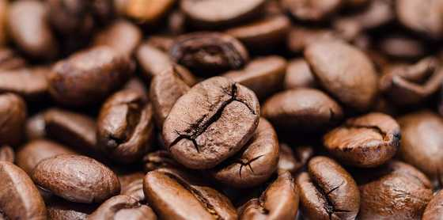
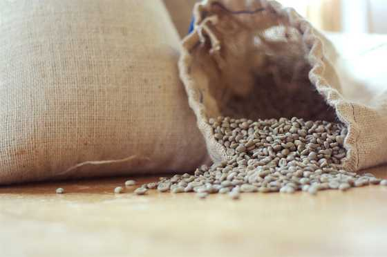

群馬県藤岡市 / 自家焙煎コーヒー
焙煎したての一杯を、
いつでも気軽に。
コレハコーヒー • THIS IS COFFEE は、藤岡市藤岡の自家焙煎コーヒーのお店です。店名は、英語の「THIS IS COFFEE」を日本語読みにしたものと紹介されています。

お店の由来と想い
紹介記事によると、コレハコーヒーは2022年9月16日にオープンした、自家焙煎のコーヒースタンド兼焙煎所です。店名は英語の「THIS IS COFFEE」を日本語読みにしたもので、オーナーの野口忠孝さんは「誰でも覚えやすく、キャッチーな名前にしたかった」と話しています。
コンセプトは「焙煎したての美味しいコーヒーをいつでも気軽に」。コーヒー豆は鮮度が大切なので、一番美味しい状態で味わってほしいという考えから、焙煎したてにこだわっているそうです。始めたきっかけは、純粋にコーヒーが好きだったから。世界各地の豆をさまざまな焙煎度合いで組み合わせる発見が楽しい、と語られています。
情報源: もっとマガジン(取材記事) / 開店・閉店情報 / Instagram
上記の事実以外(見出しの言い回しなど)は制作側の表現です。記事は取材時点の内容のため、現在の情報はInstagramでご確認ください。


メニュー・提供内容
紹介記事で確認できた範囲です。価格や詳細は変わることがあるため、準備中としています。
- 日替わりコーヒーテイクアウトで気軽に。日替わりで楽しめると紹介されています。
- 焙煎したての豆30種類以上の生豆から選べると紹介されています。豆の種類・焙煎度合い・挽き方を選べるカスタムオーダーにも対応とのことです。
- ドリップバッグオリジナルデザインのドリップバッグも作れると紹介されています。
- クラフトジンジャーエールホット・アイスがあると紹介されています。
| 営業時間 | 準備中 |
|---|---|
| 定休日 | 準備中 |
| 価格 | 準備中 |
| 電話 | 準備中 |

口コミ(イメージ例)
以下は制作側が作成したイメージ例です。実在のお客様の声ではありません。
イメージ例袋を開けた瞬間の香りが、いつもと全然違いました。焙煎したてって、こういうことなんですね。
イメージ例豆の種類も焙煎の深さも相談できて、自分好みの一杯が見つかりました。
イメージ例テイクアウトのコーヒーを片手に、藤岡の街をぶらり。気軽に立ち寄れるのがうれしい。
アクセス
| 店名 | コレハコーヒー • THIS IS COFFEE |
|---|---|
| 住所 | 〒375-0024 群馬県藤岡市藤岡775-17 |
| 最寄り | JR八高線 群馬藤岡駅(開店情報サイトより) |
| 電話 | 準備中 |
| 営業時間・定休日 | 準備中 |
| @korewa_coffee |